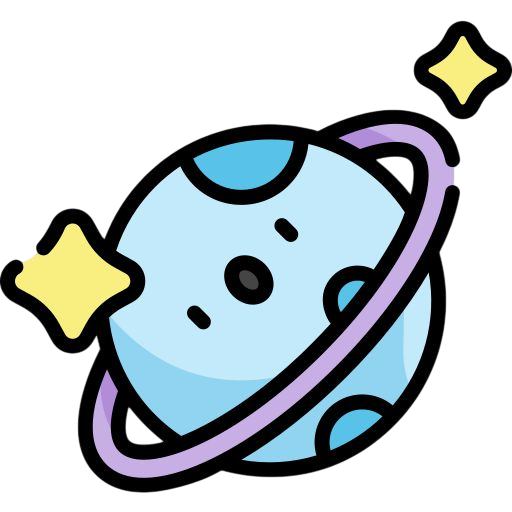
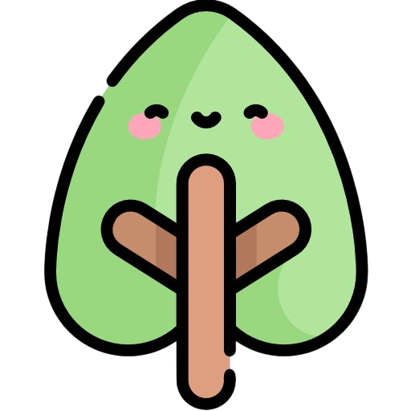
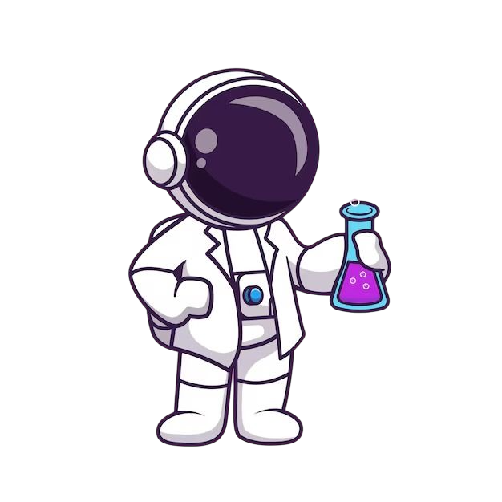

Selamat datang di platform pembelajaran IPA Kelas VII. Mari kita mulai perjalanan belajar yang menyenangkan!
Kenapa Belajar IPA itu Seru?
Eksperimen Seru
Bisa mencoba percobaan sains di rumah atau sekolah!

Mengenal Alam Semesta
Belajar tentang planet, bintang, dan galaksi yang menakjubkan.

Ilmu untuk Kehidupan
IPA membantu memahami tubuh, lingkungan, dan teknologi.

Bisa Jadi Ilmuwan!
Siapa tahu, kamu calon penemu atau astronot masa depan!